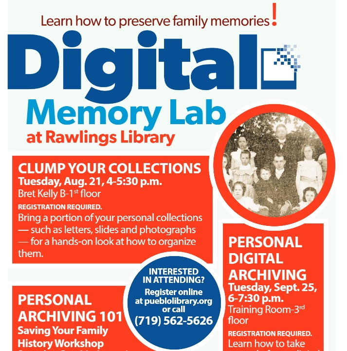

Interface
The blog of the Memory Lab Network
May 6, 2019: Building the Broward County Library Digital Memory Lab, Part I
Written by Erin Purdy, Curator, Broward County Library
 It’s been one year since the Memory Lab Network brought me and the rest of the 2018 cohort to Washington D.C. for training on how to launch a Memory Lab program in public library systems. The training in D.C. was incredible. We took a quick look at the cherry blossoms Sunday afternoon, got to go behind the scenes of some of the largest and best-known cultural heritage institutions in the nation, and learned a lot.Most importantly, I got to meet the other 12 cohort members as well as the lovely staff at the Washington D.C. Public Library who made this all possible. As the only person working in Special Collections at my library, it has been wonderful for me to have the Memory Lab Network to share my triumphs and struggles with. And practically speaking, being able to see how the other Memory Labs were built and toshare information with them made the entire process go so much faster and easier than if Broward County Library was figuring out everything from scratch.I would have had to dedicate a much larger amount of time to this project without the support of the Memory Lab Network. Blake Hatton, who works in the Memory Lab at Pueblo Library, wrote and even added pictures to a draft manual/handbook for the Memory Lab equipment. Blake was the first amongst the cohort to build and open a Memory Lab, and being able to use his tried and true handbook was a lifesaver. We used it to set up and test our equipment, and as a basis for our own manuals. After the training in D.C., the Broward County Library director decided that the Memory Lab would be located at the Weston Branch Library and open in January 2019. In the meantime, I began writing and teaching the digital preservation classesbeginning in October. Having the classes running before opening the Memory Lab equipment gave me a good sense of the type of customers who would be using the lab, as well as the questions that they would be asking as the project moved forward. In response to the learning needs demonstrated by our library customers, I developed a curriculum of classes on a range of personal archiving topics. Because it was a new program and I am the only person teaching the classes, I decided to choose topics that were generalized and relevant to the community needs. “Introduction to Digital Storage” focuses on the basics of digital preservation, “Planning for your Digital Afterlife” provides information about preparing a death plan for digital accounts and digital assets, “How to Organize your Family Papers and Photographs without Being Overwhelmed” has been very popular for customers
who want to prepare their large collections for digitization as well as long-term preservation, and “Preserving Photographs and Digital photos” blends analog and digital archiving advice. I’ve been running the classes on repeat for six months now,and all of the classes have received positive feedback. It is great to see the attendees be inspired by the simple advice that I learned during the Memory Lab Network bootcamp. They’ve even been passing on the information to their friends and family, and attendance at the classes has been growing by word of mouth. Although the Memory Lab classes are certainly not as flashy as the digitization equipment, they are a vital component of the project’s ultimate goal of encouragingcustomers to preserve their personal archive. I emphasize to the customers and staff that digitization is only the first step, and that digitized files need to be preserved just as much as old photos, papers, and tapes.
It’s been one year since the Memory Lab Network brought me and the rest of the 2018 cohort to Washington D.C. for training on how to launch a Memory Lab program in public library systems. The training in D.C. was incredible. We took a quick look at the cherry blossoms Sunday afternoon, got to go behind the scenes of some of the largest and best-known cultural heritage institutions in the nation, and learned a lot.Most importantly, I got to meet the other 12 cohort members as well as the lovely staff at the Washington D.C. Public Library who made this all possible. As the only person working in Special Collections at my library, it has been wonderful for me to have the Memory Lab Network to share my triumphs and struggles with. And practically speaking, being able to see how the other Memory Labs were built and toshare information with them made the entire process go so much faster and easier than if Broward County Library was figuring out everything from scratch.I would have had to dedicate a much larger amount of time to this project without the support of the Memory Lab Network. Blake Hatton, who works in the Memory Lab at Pueblo Library, wrote and even added pictures to a draft manual/handbook for the Memory Lab equipment. Blake was the first amongst the cohort to build and open a Memory Lab, and being able to use his tried and true handbook was a lifesaver. We used it to set up and test our equipment, and as a basis for our own manuals. After the training in D.C., the Broward County Library director decided that the Memory Lab would be located at the Weston Branch Library and open in January 2019. In the meantime, I began writing and teaching the digital preservation classesbeginning in October. Having the classes running before opening the Memory Lab equipment gave me a good sense of the type of customers who would be using the lab, as well as the questions that they would be asking as the project moved forward. In response to the learning needs demonstrated by our library customers, I developed a curriculum of classes on a range of personal archiving topics. Because it was a new program and I am the only person teaching the classes, I decided to choose topics that were generalized and relevant to the community needs. “Introduction to Digital Storage” focuses on the basics of digital preservation, “Planning for your Digital Afterlife” provides information about preparing a death plan for digital accounts and digital assets, “How to Organize your Family Papers and Photographs without Being Overwhelmed” has been very popular for customers
who want to prepare their large collections for digitization as well as long-term preservation, and “Preserving Photographs and Digital photos” blends analog and digital archiving advice. I’ve been running the classes on repeat for six months now,and all of the classes have received positive feedback. It is great to see the attendees be inspired by the simple advice that I learned during the Memory Lab Network bootcamp. They’ve even been passing on the information to their friends and family, and attendance at the classes has been growing by word of mouth. Although the Memory Lab classes are certainly not as flashy as the digitization equipment, they are a vital component of the project’s ultimate goal of encouragingcustomers to preserve their personal archive. I emphasize to the customers and staff that digitization is only the first step, and that digitized files need to be preserved just as much as old photos, papers, and tapes.
One of our favorite aspects of the Digital Memory Lab is the engagement that it has generated in our community. Since we opened the Digital Memory Lab to the public in late September of 2018, we have had over 120 users take the orientation for our Memory Lab. In addition, the vast majority of these users are individuals who were not frequent visitors to our department, meaning that the Digital Memory Lab has been able to engage with individuals throughout the community. To date, the Memory Lab has so far appeared in our local newspaper and on one of our local AM radio shows. The interest in the Memory Lab has been astounding, and we are grateful to have had this opportunity to engage with our community in this way.